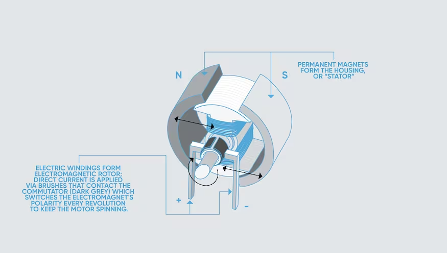

Electric Cars 101: How EV Motors Work, Tech Differences, and More
By Frank Markus, Ryan Lugo

When was the last time you stopped to think about how electric cars actually work?
We superfans of the car biz have mostly developed a reasonable understanding of how combustion powertrains work. Most of us can visualize fuel and air entering a combustion chamber, exploding, pushing a piston down,
and rotating a crankshaft that ultimately turns the wheels. We generally understand the differences between inline, flat, vee-shaped, and maybe even Wankel rotary combustion engines.
Mechanical engineering concepts such as these are comparatively easy to comprehend. But it's probably a fair bet to wager that only a minority of folks reading this can explain on a bar napkin exactly how invisible electrons turn a car's wheels or how a permanent-magnet motor differs from an AC induction one.
Electrical engineering can seem like black magic and witchcraft to car nuts, so it's time to demystify this bold new world of electromobility.
How Electric Cars Work: Motors
It has to do with magnetism and the natural interplay between electric fields and magnetic fields. When an electrical circuit closes allowing electrons to move along a wire,
those moving electrons generate an electromagnetic field complete with a north and a south pole. When this happens in the presence of another magnetic field—either from a different batch of speeding electrons or from Wile E.
Coyote's giant ACME horseshoe magnet, those opposite poles attract, and like poles repel each other.
Electric car motors work by mounting one set of magnets or electromagnets to a shaft and another set to a housing surrounding that shaft.
By periodically reversing the polarity (swapping the north and south poles) of one set of electromagnets, the EV motor leverages these attracting and repelling forces to rotate the shaft, thereby converting electricity into torque and ultimately turning the wheels.
Conversely—as in the case of regenerative braking—these magnetic/electromagnetic forces can transform motion back into electricity.
How Electric Cars Work: AC Or DC?
The electricity supplied to your home arrives as alternating current (AC), so-called because the north/south or plus/minus polarity of the power changes (alternates) 60 times per second.
(That is, in the United States and other countries operating at 110 volts; countries with a 220-volt standard typically use 50-Hz AC.) Direct current (DC) is what goes into and comes out of the + and - poles of every battery. As noted above, motors require alternating current to spin.
Without it, the electromagnetic force would simply lock their north and south poles together. It's the cycle of continually switching north and south that keeps an electric car motor spinning.
Today's electric cars are designed to manage both AC and DC energy on board. The battery stores and dispenses DC current, but again, the motor needs AC. When recharging the battery, the energy comes into the onboard charger as AC current during Level 1 and Level 2 charging and as DC high-voltage current on Level 3 "fast chargers."
Sophisticated power electronics (which we will not attempt to explain here) handle the multiple onboard AC/DC conversions while stepping the voltage up and down from 100 to 800 volts of charging power to battery/motor system voltages of 350-800 volts to the many vehicle lighting, infotainment, and chassis functions that require 12-48-volt DC electricity.
How Electric Cars Work: What Types Of Motors?
DC Motor (Brushed): Yes, we just said AC makes the motor go around, and these old-style motors that powered early EVs of the 1900s are no different. DC current from the battery is delivered to the rotor windings via spring-loaded "brushes" of carbon or lead that energize spinning contacts connected to wire windings.
Every few degrees of rotation, the brushes energize a new set of contacts; this continually reverses the polarity of the electromagnet on the rotor as the motor shaft turns. (This ring of contacts is known as the commutator).
The housing surrounding the rotor's electromagnetic windings typically features permanent magnets. (A "series DC" or so-called "universal motor" may use an electromagnetic stator.) Advantages are low initial cost, high reliability, and ease of motor control.
Varying the voltage regulates the motor's speed, while changing the current controls its torque. Disadvantages include a lower lifespan and the cost of maintaining the brushes and contacts.
This motor is seldom used in transportation today, save for some Indian railway locomotives.
Brushless DC Motor (BLDC): The brushes and their maintenance are eliminated by moving the permanent magnets to the rotor, placing the electromagnets on the stator (housing), and using an external motor controller to alternately switch the various field windings from plus to minus, thereby generating the rotating magnetic field.
Advantages are a long lifespan, low maintenance, and high efficiency.
Disadvantages are higher initial cost and more complicated motor speed controllers that typically require three Hall-effect sensors to get the stator-winding current phased correctly. That switching of the stator windings can result in "torque ripple"—periodic increases and decreases in the delivered torque.
This type of EV motor is popular for smaller vehicles like electric bikes and scooters, and it's used in some ancillary automotive applications like electric power steering assist.
Permanent-Magnet Synchronous Motor (PMSM): Physically, the BLDC and PMSM motors look nearly identical.
Both feature permanent magnets on the rotor and field windings in the stator. The key difference is that instead of using DC current and switching various windings on and off periodically to spin the permanent magnets, the PMSM functions on continuous sinusoidal AC current.
This means it suffers no torque ripple and needs only one Hall-effect sensor to determine rotor speed and position, so it's more efficient and quieter.
The word "synchronous" indicates the rotor spins at the same speed as the magnetic field in the windings.
Its big advantages are its power density and strong starting torque. A main disadvantage of any EV motor with spinning permanent magnets is that it creates "back electromotive force" (EMF) when not powered at speed, which causes drag and heat that can demagnetize the motor.
This motor type also sees some duty in power steering and brake systems, but it has become the motor design of choice in most of today's battery electric and hybrid vehicles.